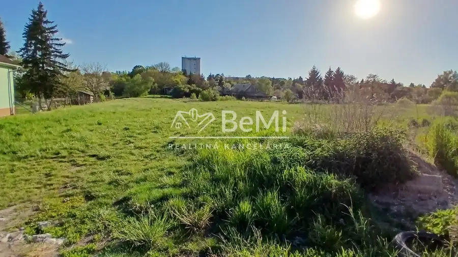
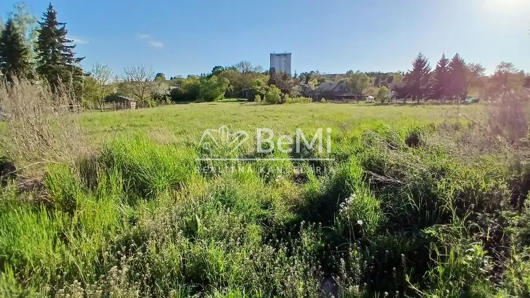
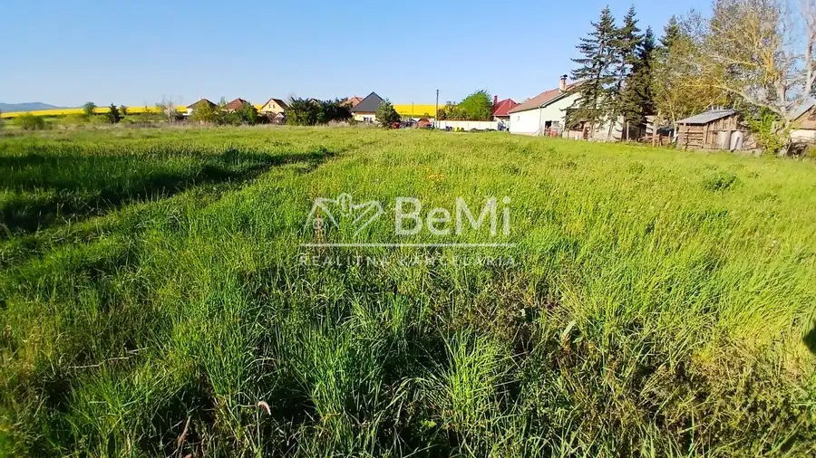
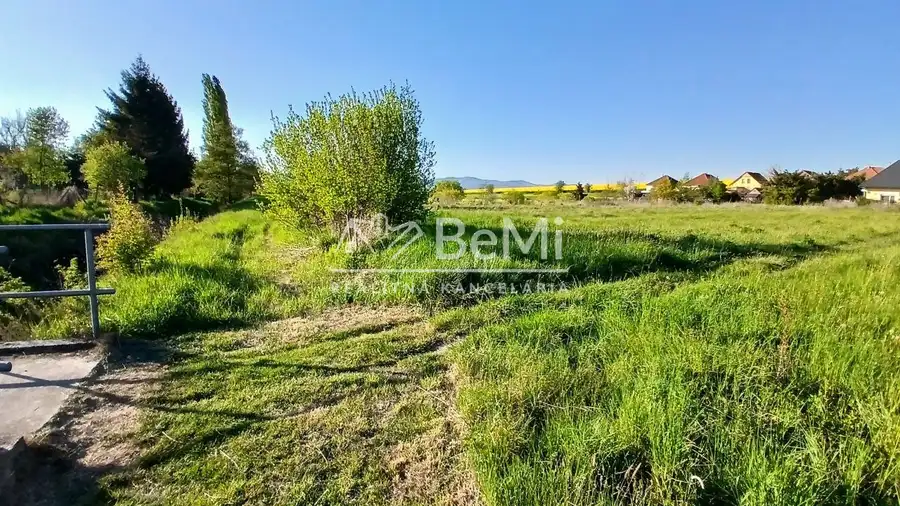
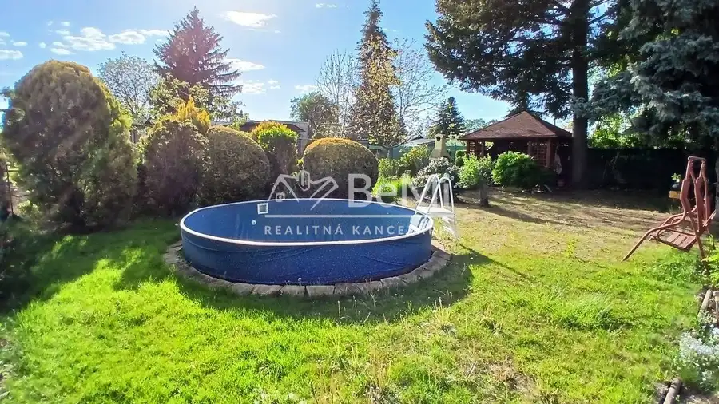
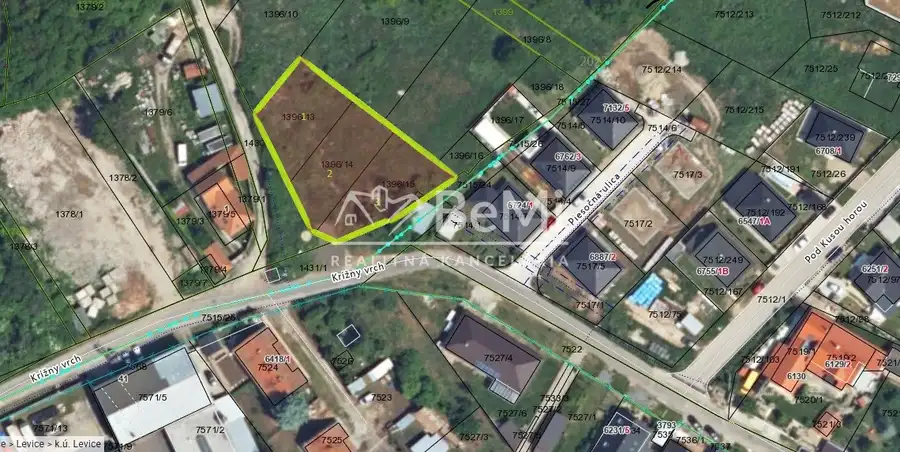
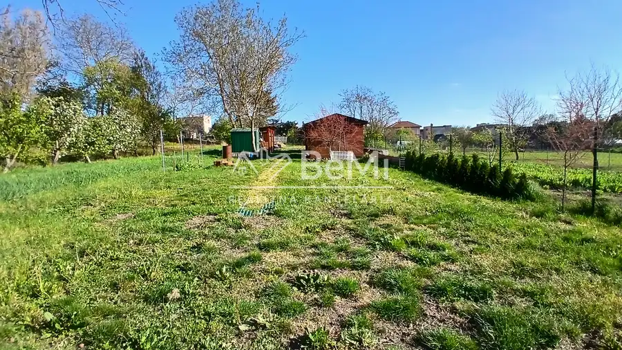

Slnečný stavebný pozemok - Drženice časť Kmeťovce (17-14-MIMI)
Drženice




- Plocha20000 m²
O nehnuteľnosti
Predaj stavebného pozemku – 20 árovPonúkame na predaj pekný slnečný pozemok o výmere 2000 m2, ideálny na výstavbu rodinného domu alebo ako investícia do budúcnosti. Pozemok sa nachádza v pokojnej lokalite s príjemným prostredím a dobrou dostupnosťou v nepriechodnej ulici v obci Drženice časť Kmeťovce (10 km od Levíc).Výhodou je veľkorysá rozloha, ktorá poskytuje dostatok priestoru na bývanie aj oddych. Pozemok je posledný v ulici je rovinatý a hneď za pozemkom sa nachádza potok.Inžinierske siete sa nachádzajú pred pozemkom.Prístup k pozemku je zabezpečený asfaltovou cestou.Lokalita ponúka pokojné bývanie mimo ruchu mesta, vhodné pre ľudí, ktorí hľadajú súkromie a kontakt s prírodou.Cena 103.800 €V prípade záujmu kontaktujte : Bc. Miroslav Miklóš, tel.: 0903 588 355, mail : miklos@realitybemi.skProstredníctvom nášho finančného poradcu Vám pomôžeme s financovaním kúpy nehnuteľností.NAŠE CENY SÚ VRÁTANE PROVÍZIE ZA KOMPLETNÝ SERVIS A SÚ SCHVÁLENÉ MAJITEĽOM.
Parametre
- Druh
- Pozemok pre rodinné domy
- Dátum zverejnenia
- 06. 05. 2026
- Plocha pozemku
- 20000 m²
- Typ
- Predaj
Kde to je


Mohlo by Vás zaujímať

PozemokNové 67 000 €Pozemok so záhradným domčekom - Levice / Mestský majer za nadjazdom (018-14-MIMI) Levice 614 m²
PozemokNové 32 000 €Predaj, pozemok Krížny vrch - Levice (011-14-MIMI) Levice 400 m²
PozemokNové 52 000 €Predaj, stavebný pozemok 17000m2 - Veľký Ďur (014-14-MIMI) Veľký Ďur